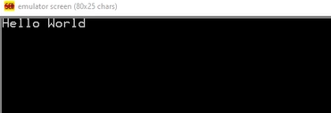

¿Cómo usar el Lenguaje Ensamblador?
El lenguaje ensamblador utiliza instrucciones específicas del procesador, cada una con una sintaxis particular. Un programa típico se compone de etiquetas, instrucciones y comentarios.
- Etiquetas: Identifican posiciones en el código para saltos o referencias.
- Instrucciones: Operaciones como MOV, ADD, SUB, JMP, etc.
- Comentarios: Se escriben con punto y coma
;y no afectan la ejecución.
Tipos de datos
- BYTE: 8 bits
- WORD: 16 bits
- DWORD: 32 bits
Instrucciones comunes
| Instrucción | Significado | Ejemplo |
|---|---|---|
mov |
Mover datos | mov eax, 1 |
add |
Sumar | add eax, ebx |
sub |
Restar | sub ecx, 2 |
mul |
Multiplicación sin signo | mul ebx |
div |
División sin signo | div ecx |
cmp |
Comparar dos valores | cmp eax, 5 |
jmp |
Salto incondicional | jmp fin |
je / jne |
Salto si igual / si no es igual | je etiqueta |
push |
Poner en la pila | push eax |
pop |
Sacar de la pila | pop ebx |
int |
Llamada a interrupción (ej. sistema) | int 0x80 |
Ejemplo básico
section .data
mensaje db 'Hello World',0
section .text
mov eax, 1
mov ebx, 0
int 0x80
Este ejemplo muestra la estructura básica de un programa en ensamblador para x86.

Ejemplo de código ensamblador